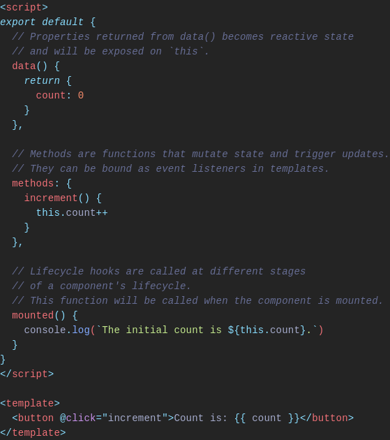
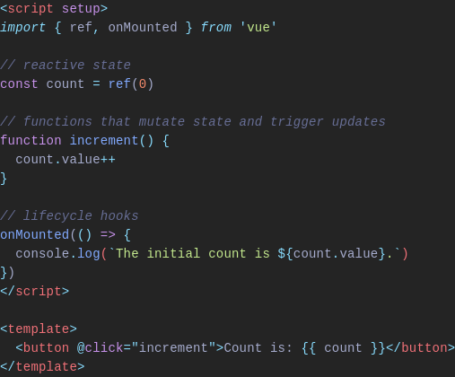
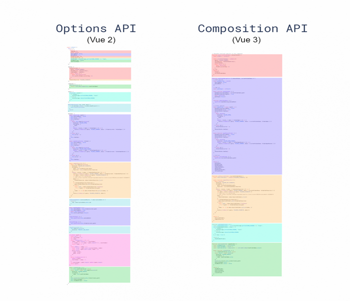

Vue
2 --> 3
Vue 2
- Version mineure finale 2.7 (2022)
- Fix pour les bugs critiques et mises à jour de sécurité pour les 18 mois suivants la 2.7
- Passage en maintenance mode
Vue 3
- Nouveautés
- Breaking Changes
- Ecosystème
- Migration
Nouveautés
Performances
- Taille du bundle jusqu'à 41% plus petite grâce au tree-shaking
- Rendu initial jusqu'à 55% plus rapide
- Mises à jour jusqu'à 133% plus rapides
- Réduction de la mémoire utilisée jusqu'à 54%
Nouveautés
Composition API
Nouvel attribut "setup" permet d'utiliser la composition API et ainsi d'associer nous-même chaque fragment de code à des hooks. Les imports et varaibles/fonctions déclarés dans <script setup> sont accessible directement dans le template.


Nouveautés
Composition API
Permet une meilleure organisation du code
Nouveautés
TypeScript
Vue 3 entièrement écrit en TypeScript
Breaking Changes
API
- Vue 2 n'a pas de concept de "app", mais plusieurs APIs globales (Vue.component, Vue.directive, ...)
-
Nouvelle API globale: createApp
- Retourne une app instance (nouveau concept de Vue 3)
- La nouvelle règle d'or est que toute API qui modifie le comportement de Vue est maintenant transféré dans l'app instance
- Une app instance expose un subset des APIs globales de Vue 2 (Vue.component, Vue.directive, Vue.mixin, ....)
-
Tree-shaking support
- Changement de syntaxe permettant d'éviter le code mort
- Les APIs qui ne sont pas utilisées seront éliminés du bundle final.
Breaking Changes
Templates directives
-
v-model:
- L'option .sync est supprimée et remplacé par un argument sur v-model
- Plusieurs v-model sur un seul composant
-
key:
- N'est plus nécessaire sur v-if / v-for car Vue 3 génére des keys uniques automatiquement
- Si utilisé sur le même élément, v-if aura la priorité sur v-for
Breaking Changes
Et plus ...
- APIs supprimées: $events, filters, ...
- Fonction render modifiée (utilisée seulement si on utilise pas de <template>)
- ...
Ecosystème
Build, State management, Router, IDE support, ...Vite
Build tools
Remplace vue-cli qui est passé en maintenance mode et n'est plus recommanbdé pour les nouveaux projets
Nécessite Node.js version >= 12.2.0
Pinia
State management
Prototype pour vuex 5 devenu la solution de référence
Vue Router 4.0
Routing
Vue supporté par Vue Router 4 qui comprend lui-même des breaking changes
Volar
IDE support
Nouvelle extension officielle pour VSCode.
Support TypeScript amélioré.
Migration
Un build de migration existe: @vue/compat
-
Limitations:
- Certaines dépendences qui repose sur l'API interne de Vue 2 et qui n'ont pas encore de version compatible avec Vue3
- Vue 3 ne supporte pas Internet Explorer 11